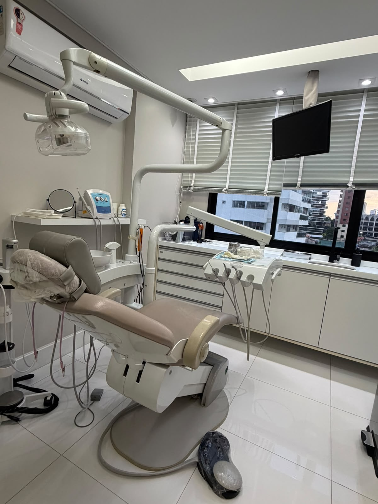

Quando é necessário usar aparelho ortodôntico?
Os sinais que indicam a hora certa de procurar um ortodontista, em crianças, adolescentes e adultos.
Blog
Artigos escritos para responder as dúvidas mais comuns de quem está pensando em começar (ou já está em) um tratamento ortodôntico — com linguagem clara e sem enrolação.
Agendar avaliaçãoOs sinais que indicam a hora certa de procurar um ortodontista, em crianças, adolescentes e adultos.

As diferenças reais entre o aparelho metálico tradicional e os alinhadores transparentes tipo Invisalign.

Os fatores que influenciam a duração do tratamento e por que cada caso tem seu próprio ritmo.

Desmistificando o medo da dor: o que é normal sentir e como aliviar o desconforto nos primeiros dias.

Escovação, fio dental e os acessórios que facilitam a limpeza de quem usa aparelho fixo.

Uma lista prática do que pode danificar o aparelho e comprometer o andamento do tratamento.

Por que a primeira avaliação ortodôntica é recomendada ainda na infância, mesmo sem indicação de aparelho.
O motivo pelo qual pular essa etapa pode colocar em risco todo o resultado conquistado no tratamento.
Nenhum artigo encontrado nesta categoria por enquanto.